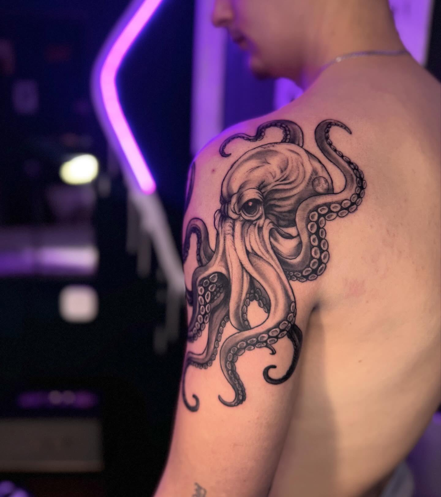
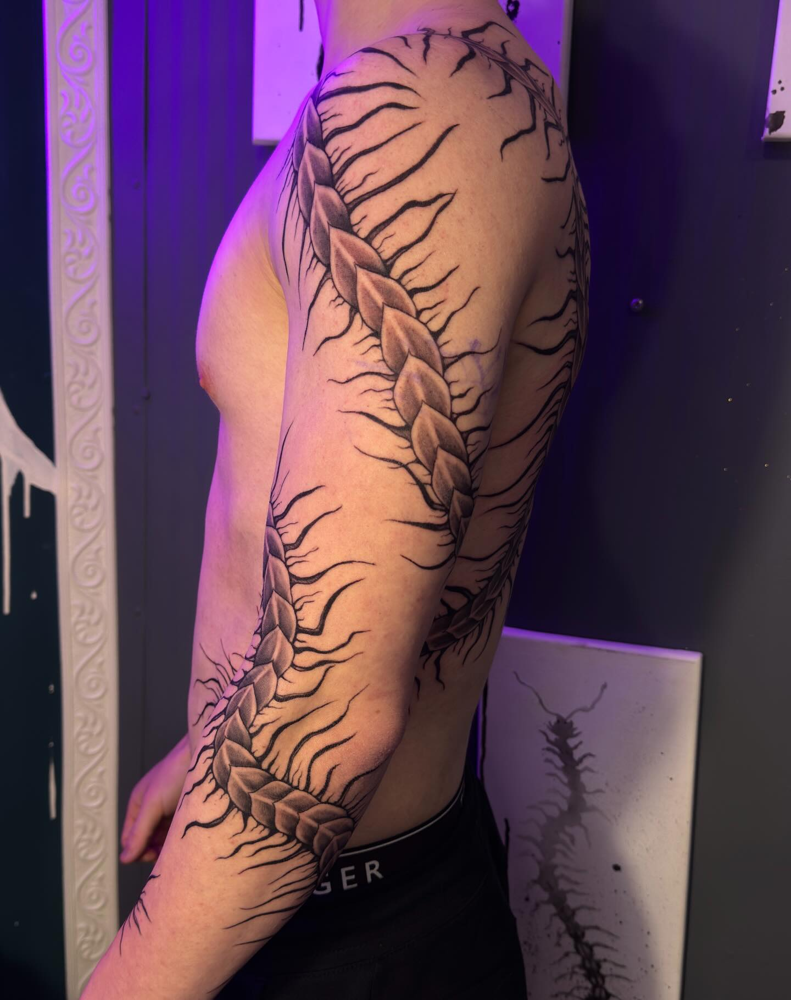
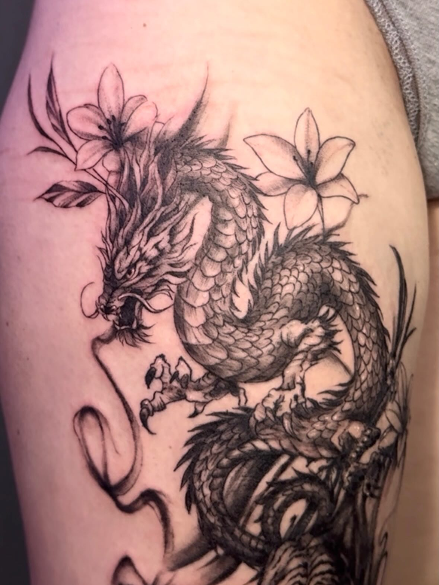
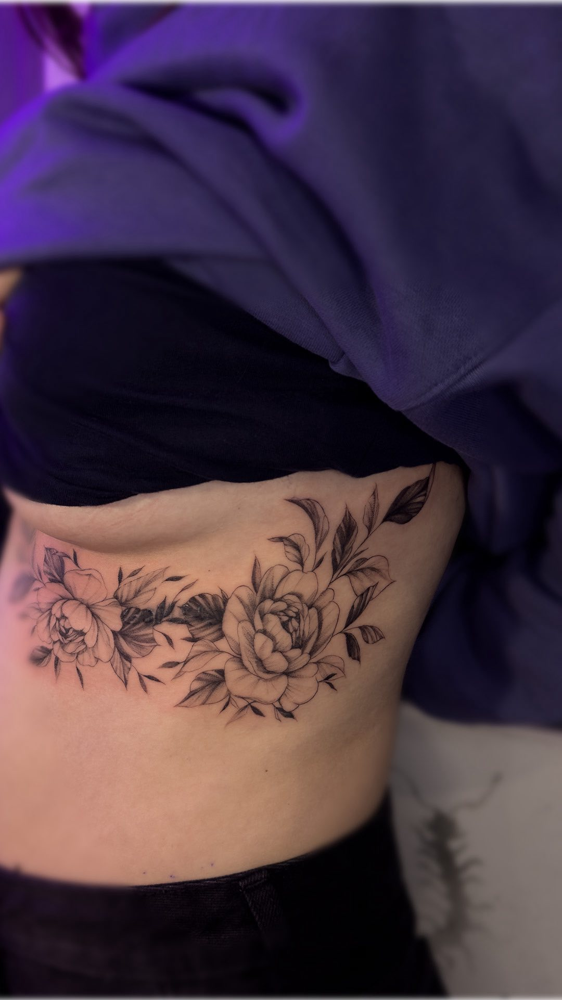

Delikatne prace, rękawy, cover-upy.Projekty tworzone z pasją.




Jestem tatuatorką, która łączy różne style, tworząc autorskie projekty dopasowane do Ciebie. Specjalizuję się w czerni – od delikatnych, subtelnych wzorów, po duże kompozycje i rękawy.